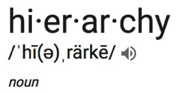
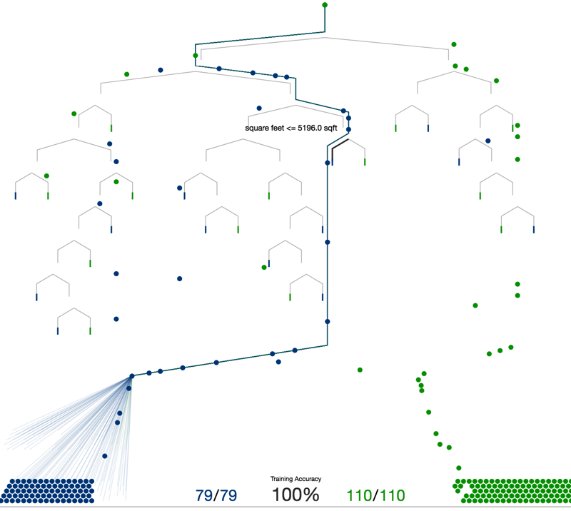
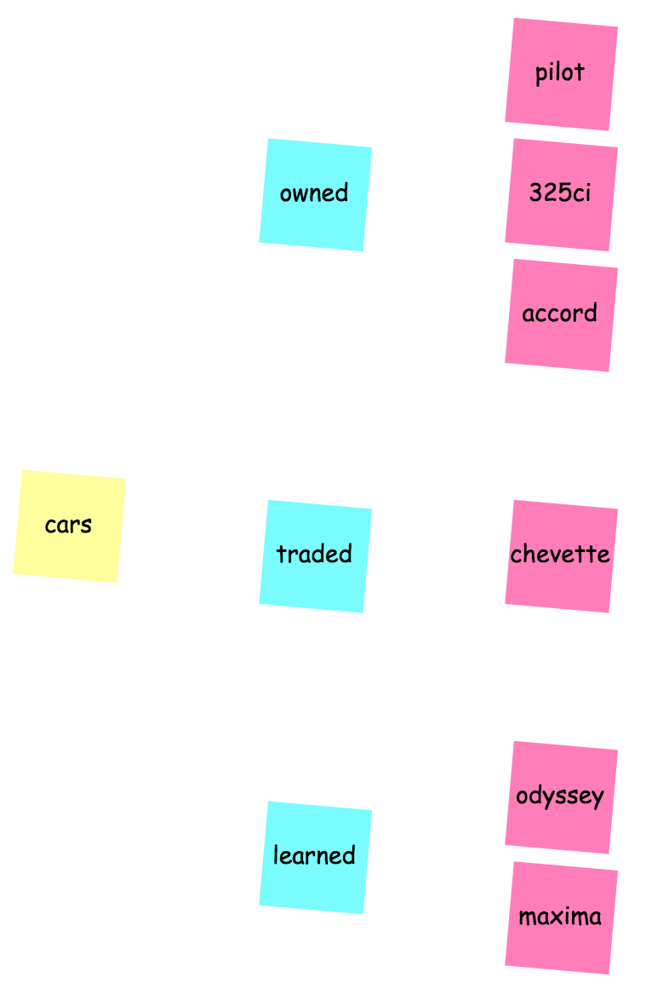

class: center, middle, white background-image: url(images/twisty-tree.jpg) .context-footer[d3-Unconf | 2017 | David Richards] # Simpler<br>Hierarchy<br>Visualizations<br>in D3<br> data is central<br> comprehend its structure first<br> the viz comes second ??? Who am I? Why this topic? (Text Analytics) When you understand your data, magic happens. --- .context[<iframe width="125" height="125" frameborder="0" src="viz/icon.html"></iframe>] # Our Goal <!-- TODO: {2: ANIMATE} tree.html: (a) Grow from initial node. (b) Is this the full viz with my data? --> .right-column-wide[ <iframe width="400" height="500" frameborder="0" src="viz/tree-example.html"></iframe> ] Simplify hierarchical data<br> visualizations<br> by understanding * the data * your options * _d3.stratify_ ??? Building this presentation, I had an epiphany. To this date, I've built with carefully crafted json structured data. Now I build with tabular data and d3.stratify. But I had to really understand the "catches" before it became easy. Today, we'll talk about what I learned and what you need to build great viz's with hierarchical data without spending all of your time structuring your data. --- name: d3-examples <iframe style="display: block;" width="750" height="600" frameborder="0" src="viz/cluster-json-example.html"></iframe> .context-footer[Curran Kelleher @ bl.ocks.org/curran] ??? https://bl.ocks.org/curran/1dd7ab046a4ed32380b21e81a38447aa --- name: d3-examples <iframe style="display: block;" width="750" height="500" frameborder="0" src="viz/sunburt-csv-sequences-example.html"></iframe> .context-footer[Kerry Rodden @ bl.ocks.org/kerryrodden] ??? https://bl.ocks.org/kerryrodden/766f8f6d31f645c39f488a0befa1e3c8 --- name: d3-examples <iframe style="display: block;" width="750" height="600" frameborder="0" src="viz/treemap-json-example.html"></iframe> .context-footer[Mike Bostock @ bl.ocks.org/mbostock] ??? https://bl.ocks.org/mbostock/raw/4063582/ --- name: d3-examples <iframe style="display: block;" width="750" height="600" frameborder="0" src="viz/circlepack-example.html"></iframe> .context-footer[Ariel Aizemberg @ bl.ocks.org/aaizemberg] ??? http://bl.ocks.org/aaizemberg/9e7c7c7762a58c1cd107af5f9235825b --- name: d3-examples .context[<iframe width="125" height="125" frameborder="0" src="viz/icon.html"></iframe>] .context-footer[inspired by Peter Cook @ d3indepth.com] # Hierarchies: Illustrated .right-column[ <iframe style="display: block;" width="400" height="250" frameborder="0" src="viz/sunburst-json-basic.html"></iframe><br> <iframe style="display: block;" width="400" height="250" frameborder="0" src="viz/radialtree-json-basic.html"></iframe> ] .left-column[ <iframe width="400" height="250" frameborder="0" src="viz/pack-json-basic.html"></iframe><br> <iframe width="400" height="250" frameborder="0" src="viz/treemap-json-basic.html"></iframe> ] ??? Circle pack. Sunburst. Treemap. Radial tree. Radial tree is a little pathetic... --- .context[<iframe width="125" height="125" frameborder="0" src="viz/icon.html"></iframe>]  _plural_ __hierarchies__ <mark> DATA </mark><br> a pyramid-like organization of ideas, people, items... * with a _single_, top-level item called the "__root__". * every item has _one higher_ and _zero or more lower_ neighbors. * higher levels have greater inclusion, influence, or breadth. --- .context[<iframe width="125" height="125" frameborder="0" src="viz/icon.html"></iframe>] # D3-Friendly JSON Hierarchy .left-column[ _Continent ⇢ Country ⇢ State ⇢ City_ ``` json { "name": "North America", "children": [ { "name": "Canada" }, { "name": "Mexico" }, { "name": "United States", "children": [ { "name": "California" }, { "name": "Indiana", "children": [ { "name": "Fishers" }, { "name": "Carmel" }, { "name": "Indianapolis" } ] } ] } ] } ``` ] .right-column.small.gray[ <p> </p> __JSON Objects__<br> `{ "name":"John", "age":30, "car":null }` * surrounded by curly braces {} * written in key/value pairs * keys must be strings; valid value types<sup>1</sup> * keys and values are separated by a colon * each key/value pair is separated by a comma __JSON Arrays__<br> `[ "Ford", "BMW", "Fiat" ]` * almost the same as arrays in JavaScript * valid value types<sup>1</sup> ] .context-footer[<sup>1</sup> _Valid types: string, number, object, array, boolean or null._] --- .context[<iframe width="125" height="125" frameborder="0" src="viz/icon.html"></iframe>] # Hierarchy Examples _Goal_: Begin thinking of your own dataset. .right-column[] __Data Examples__ * _Company_: CEO ⇢ EVP ⇢ SVP ⇢ VP ⇢ DIR ⇢ MGR * _Filesystem_: Folder ⇢ Subfolder ⇢ File * _Book_: Dictionary ⇢ Letter ⇢ Word ⇢ Part-of-speech ⇢ Definitions ⇢ Examples * _Family Tree_: Grandparents ⇢ Parents ⇢ Kids (this one kinda' falls apart...) __Decision Making__ * _MECE_: "mutually exclusive, collectively exhaustive" in consulting * _Taxonomy_: from science to risk management, we like orderly structures * _Decision Tree_: machine learning technique in data science .context-footer[decision tree from www.r2d3.us] ??? * Start thinking of your idea. * Not everything that seems hierarchical is: family tree * MECE is actually a good way to divide up complex problems and a litmus test for true hierarchy. <!-- #################################### --> <!-- ## POST IT HIERARCHY ############# --> <!-- #################################### --> --- class: center, middle, white background-image: url(images/sticky-notes.png) ## Let's Make a Viz --- .context[<iframe width="175" height="125" frameborder="0" src="viz/tree-icon.html"></iframe>] # Sticky Note Dataset (Hierarchical) _Goal_: When we're done, you'll have ~6 items divided into ~3 categories all written on sticky notes. .right-column[] 1. __Pick a <mark>topic</mark>__ (cars, coding, ice cream, stores, shoes, vacations, bucket list, learning agenda, your projects). Don't overthink it. 2. __Divide your topic__ into 3-ish <mark>categories</mark> (love, hate, envy; done, probably will do, too chicken; I came, I saw, I conquered; past, present future). 3. __Add <mark>items</mark> to each category__ 4. __Record on sticky notes__: * <mark class='mark-pink'>Pink</mark> = _Topic_ (the _Root_ of your hierarchy). [n=1] * <mark class='mark-blue'>Blue</mark> = *Categories* (how you divided things up). [n=~3] * <mark class='mark-yellow'>Yellow</mark> = Items(the details). [n=~6] --- <!-- TODO: {9:ANIMATE} Improve this animation to make the point. --> .context[<iframe width="175" height="125" frameborder="0" src="viz/tree-icon.html"></iframe>] # My Sticky Notes & JSON .left-column[  ] .right-column[ ``` json { "id": "cars", "children": [{ "id": "owned", "children": [ {"id": "pilot", "size": 40}, {"id": "325ci", "size": 20}, {"id": "accord", "size": 2}] }, { "id": "traded", "children": [ {"id": "chevette", "size": 1}] }, { "id": "learned", "children": [ {"id": "odyssey", "size": 20}, {"id": "maxima", "size": 5}] }] } ``` ] --- .context[<iframe width="175" height="125" frameborder="0" src="viz/tree-icon.html"></iframe>] # Tree in 75 Lines (Part 1) ``` html <svg> <g></g> </svg> <script> var vWidth = 175; var vHeight = 125; // Prepare our physical space var g = d3.select('svg').attr('width', vWidth).attr('height', vHeight) .select('g').attr('transform', 'translate(7,0)'); // Declare d3 layout var vLayout = d3.tree().size([vHeight, vWidth * 0.6]); // Get the data from our JSON file d3.json('data-car.json', function(error, vData) { if (error) throw error; drawTree(vData); }); </script> ``` .right-column-narrow[ ] --- .context[<iframe width="175" height="125" frameborder="0" src="viz/tree-icon.html"></iframe>] # Tree in 75 Lines (Part 2) ``` html <script> // Draw our sunburst function drawTree(data) { // Layout + Data var vRoot = d3.hierarchy(data); var vNodes = vRoot.descendants(); var vLinks = vLayout(vRoot).links(); // Draw on screen g.selectAll('path').data(vLinks).enter().append('path') .attr('d', d3.linkHorizontal() .x(function(d) { return d.y; }) .y(function(d) { return d.x; })); g.selectAll('circle').data(vNodes).enter().append('circle') .attr('transform', function (d) { return 'translate(' + d.y + ',' + d.x + ')'; }); g.selectAll('text').data(vNodes).enter().append('text') .attr('transform', function (d) { return 'translate(' + (d.y + 7) + ',' + (d.x + (d.children ? -5 : 3)) + ')'; }) .text(function(d) { return d.data.id }).style('opacity', 0) .transition().duration(1000).style('opacity', 1); } </script> ``` <!-- #################################### --> <!-- ## POST IT TABULAR ############### --> <!-- #################################### --> --- class: center, middle, white background-image: url(images/non-twisty-trees.jpg) ## Our Data Doesn't Look Like That... --- .context[tabular] # There's an easier way... We'll re-do our sticky note exercise to show how the previous json-hierarchy model compare to the csv-link model. _Why?_ * This style is more likely to match our source data. (Imagine an employee table that is natuarally recursive.) * Very easy to add new records. * Fewer opportunities for JSON typos. _Goal_ When we're done, you'll still have ~6 items divided into ~3 categories all written on sticky notes. However, we'll lay them out as source-target pairs (so we'll have 9 lines of data). _Duplicate Stickies & Column Names_ 1. You'll duplicate 1 <mark class='mark-pink'>topic</mark> note for each _category_ + 1. 2. You'll duplicate 1 <mark class='mark-blue'>categories</mark> note for each of it's child _items_ + 1.. 3. Create 2 stickies that we'll use as column headers: "ID", "ParentID". (No need to create any copies of your <mark class='mark-yellow'>items</mark>). --- .context[tabular] # Sticky Note Dataset (Tabular / Links) _Lay Them Out_ Think about our tree visual. Starting with the root / topic node, and branching out to categories, and finally to items. Each stage of our tree is simply a series of nodes and links. In this exercise, we'll lay out each of the nodes and links in a tabular form. * 1st row: topic on left, a category on the right * 2nd row: topic on left, another category on the right * 3rd row: ditto * 4th row: a category on the left, and a related item on the right. * 5th row: same category on the left (assuming it had more than one item), and the next item on the right. * 6th row+: continue until you've created 1 line for each category-item relationship. We've now broken down our hierarchy into it's component links. And, as long as we haven't violated any rules (multiple topics / roots), we'll have a very simple structure that d3.stratify will reconstitute into our more compex hierachy. --- .context[tabular] # The CSV .left-column[ ### Example ``` id,parentId cars, owned,cars pilot,owned 325ci,owned accord,owned traded,cars chevette,traded learned,cars odyssey,learned maxima,learned ```] .right-column[ ## d3.stratify().links() Rules * 1st row has column headers * 2nd row has [Root],[null] * After that, anytime we refer to 'cars', we're referring to our root * We can have only 1 Root * Different nodes must be uniquely named ] --- .context[tabular] # Our Charts [sames charts!] --- .context[tabular] # Tree in 60 (?) Lines [just show differences] --- .context[tabular] # Adding data is super easy [open csv, add some lessons learned and refresh] <!-- #################################### --> <!-- ## COOL EXTRAS ################### --> <!-- #################################### --> --- class: center, middle, white background-image: url(images/twisty-tree.jpg) ## Cool Extras --- .context[extras] # Hierarchical Data -> Force Diagram Want to create a force diagram, but your data is set up hierarchically? `node.links()` returns an array of links for from your hierarchical dataset, where each link is an object that defines source and target properties. The source of each link is the parent node, and the target is a child node.<br>([github.com/d3/d3-hierarchy#node_links](https://github.com/d3/d3-hierarchy#node_links)) ``` javascript var vRoot = d3.hierarchy(vData); var vNodes = vRoot.descendants(); var vLinks = vRoot.links(); ``` --- .context[extras] # d3.linkHorizontal() - Draw Links Simply _Manually Drawing the Link as an SVG Path_<br> ...requires setting your `<path>` 'd' attribute to a complex concatenation of source, target, and curves: ``` javascript g.selectAll('path').data(vLinks).enter().append('path') .attr('d', function(d) { return 'M' + d.y + ',' + d.x + 'C' + (d.parent.y + 100) + ',' + d.x + ' ' + (d.parent.y + 100) + ',' + d.parent.x + ' ' + d.parent.y + ',' + d.parent.x; }); ``` _Use D3's Shape Helper Function_<br> `.linkHorizontal()` returns a link generator. To visualize links in a horizontal tree diagram rooted on the left edge of the display: ``` javascript g.selectAll('path').data(vLinks).enter().append('path') .attr('d', d3.linkHorizontal() .x(function(d) { return d.y; }) .y(function(d) { return d.x; })); ``` See the API description at [github.com/d3/d3-shape/#linkHorizontal](https://github.com/d3/d3-shape/#linkHorizontal), along with usage notes on `.linkVertical()` and `.linkRadial()`. --- .context[extras] # Helpful Documents _API Documents & Blocks_ * [github.com/d3/d3-hierarchy](https://github.com/d3/d3-hierarchy) — D3 API (including .stratify) * [blockbuilder.org/search](http://blockbuilder.org/search) — Search the Blocks _Hierarchical Tutorials_ * [d3indepth.com/layouts/](http://d3indepth.com/layouts/) — Peter Cook's D3 in Depth Layouts * [denjn5.github.io/unconf/hierarchies-in-d3.html] - This presentation _David Richards_ * [denjn5.github.io/](https://denjn5.github.io/) — Sunbursts, Line-by-line * [bl.ocks.org/denjn5](https://bl.ocks.org/denjn5) — My Blocks, more sunbursts... * [github.com/denjn5](https://github.com/denjn5) - GitHub * [linkedin.com/in/david-richards-do-good/](https://www.linkedin.com/in/david-richards-do-good/) - LinkedInd * [twitter.com/learn_do_repeat](https://twitter.com/learn_do_repeat) - Twitter --- .context-footer[slides created with remark.js] # Thanks! <!-- TODO: Fill in more: LinkedIn (https://www.linkedin.com/in/david-richards-18545310/) and Twitter (https://twitter.com/learn_do_repeat) -->